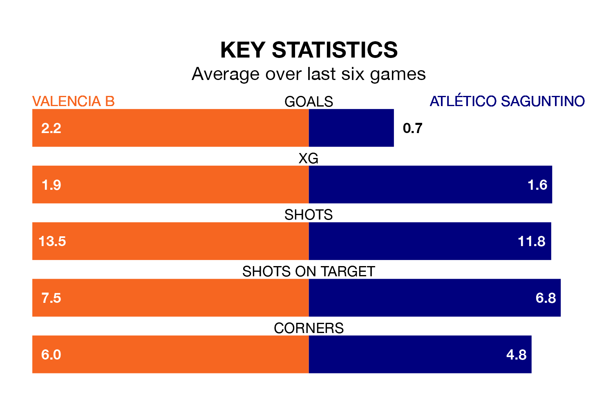

Atlético Saguntino travel to Valencia B on early Sunday in the Segunda División RFEF Group 3.
The visitors come into the game on the back of a defeat in their last match, having lost to UD Alzira 2-0 at home.
Valencia B, meanwhile, drew their last match, 0-0 against UE Sant Andreu.
With 48 goals in 33 games so far this season, Valencia B are scoring more than average in the league with 1.5 goals per game. And they are conceding at an average rate, letting in 39 goals at a rate of 1.2 per game.
Atlético Saguntino, meanwhile, are below average scorers, with 1.0 goal per game, compared to a league average of 1.2. They have conceded 1.3 goals per game.
In the last 10 years, Valencia B and Atlético Saguntino have played each other on nine occasions. Valencia B won four of them, Atlético Saguntino one, and they drew four times.
On average, Valencia B scored 1.9 goals and Atlético Saguntino 1.3 in those matches.
Their last meeting was on January 7, when Atlético Saguntino won 3-1 at home.
The away team are 14th in the table after 33 games, of which they have won 11 and drawn eight, earning 41 points.
The hosts are two places ahead of Atlético Saguntino in 12th, with 11 wins and 10 draws putting them on 43 points.
Valencia B are in mixed form in the Segunda División RFEF Group 3, with two wins and two draws from their last six games.
With two wins and a draw over that period, Atlético Saguntino's form is slightly worse – they have taken seven points from 18, compared to Valencia B's eight.
Updated: 10:44 (UTC), 30/04/24